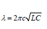

Đề môn Vật Lý số 1
BỘ GIÁO DỤC VÀ ĐÀO TẠO BẮC Ninh
ĐỀ THI THỬ QUỐC GIA 2014-2015
90
:phút
00
:giây
Ghi Chú
Câu 1:
Nguyên tắc hoạt động mạch chọn sóng trong máy thu thanh dựa trên hiện tượng:
A: Tổng hợp hai dao động điện từ bất kỳ.
B: Giao thoa sóng.
C: Cộng hưởng dao động điện từ.
D: Sóng dừng.
Câu 2:
Cơ năng của một vật dao động điều hòa
A: tăng gấp đôi khi biên độ dao động của vật tăng gấp đôi.
B: biến thiên tuần hoàn theo thời gian với chu kỳ bằng chu kỳ dao động của vật.
C: biến thiên tuần hoàn theo thời gian với chu kỳ bằng một nửa chu kỳ dao động của vật.
D: bằng động năng của vật khi vật tới vị trí cân bằng.
Câu 3:
Mạch chọn sóng của một máy thu vô tuyến gồm cuộn cảm thuần có độ tự cảm L và một bộ tụ gồm tụ C
O
cố định ghép song song với tụ xoay C
x
. Tụ xoay C
x
có điện dung biến thiên từ C
1
=20pF đến C
2
= 320pF khi góc xoay biến thiên từ được từ 0
o
đến 150
o
. Nhờ vậy mạch thu được sóng điện từ có bước sóng từ λ
1
= 10m đến λ
2
= 40m. Biết điện dung của tụ xoay là hàm bậc nhất của góc xoay. Để mạch thu được sóng điện từ có bước sóng λ = 20m thì góc xoay của bản tụ là
A: 45
o
B: 60
o
C: 30
o
D: 75
o
Câu 4:
Một con lắc lò xo đang dao động điều hòa với phương trình x = Acos ωt. Người ta thấy cứ sau 0,5(s) động năng lại bằng thế năng thì tần số góc dao động của con lắc sẽ là:
A: 4π(rad/s)
B: 2π(rad/s)
C: π/2(rad/s)
D: π(rad/s)
Câu 5:
Một con lắc lò xo đặt nằm ngang gồm vật M có khối lượng 400g và lò xo có hệ số cứng 40N/m đang dao động điều hòa xung quanh vị trí cân bằng với biên độ 5cm. Khi M qua vị trí cân bằng người ta thả nhẹ vật m có khối lượng 100g lên M (m dính chặt ngay vào M), sau đó hệ m và M dao động với biên độ
A: 3√2 cm
B: 2√5 cm
C: 4,25 cm
D: 2√2 cm
Câu 6:
Theo chiều tăng dần của bước sóng các loại sóng điện từ thì ta có sự sắp xếp sau
A: tia
y
, tia X, tia tử ngoại, ánh sáng nhìn thấy, tia hồng ngoại, sóng vô tuyến.
B: tia X, ánh sáng nhìn thấy, tia hồng ngoại, sóng vô tuyến, tia tử ngoại, tia
y
C: sóng vô tuyến, tia hồng ngoại, ánh sáng nhìn thấy, tia tử ngoại, tia X, tia
y
D: tia
y
, tia tử ngoại, tia X, ánh sáng nhìn thấy, tia hồng ngoại, sóng vô tuyến.
Câu 7:
Trên phương truyền sóng các điểm dao động cùng pha với nhau cách nhau một khoảng
A: Bằng nửa bước sóng
B: Bằng số nguyên lần bước sóng
C: Bằng một bước sóng
D: Bằng phân tử bước sóng
Câu 8:
Katốt của tế bào quang điện có công thoát 1,5eV, được chiếu bởi bức xạ đơn sắc λ. Lần lượt đặt vào tế bào, điện áp UAK = 3V và U’AK = 15V, thì thấy vận tốc cực đại của elêctrôn khi đập vào anốt tăng gấp đôi. Giá trị của λ là:
A: 0,795 µm.
B: 0,259 µm
C: 0,497 µm
D: 0,211 µm
Câu 9:
Trong thí nghiệm Iâng về giao thoa ánh sáng, hai khe hẹp cách nhau một khoảng 0,5 mm, khoảng cách từ mặt phẳng chứa hai khe đến màn quan sát là 1,5 m. Hai khe được chiếu bằng bức xạ có bước sóng 0,6 μm. Trên màn thu được hình ảnh giao thoa. Tại điểm M trên màn cách vân sáng trung tâm một khoảng 5,4 mm có
A: vân sáng bậc 2
B: vân sáng bậc 3
C: vân sáng bậc 4
D: vân sáng thứ 5
Câu 10:
Bắn hạt α có động năng 4 MeV vào hạt nhân đứng yên thì thu được một prôton và hạt nhân X. Giả sử hai hạt sinh ra có cùng vận tốc, tính động năng và tốc độ của prôton. Cho: m
α
= 4,0015 u; m
X
= 16,9947 u; mN = 13,9992 u; m
p
= 1,0073 u; 1u = 931 MeV/c
2
.
A: 22,15.10
5
m/s
B: 30,85.10
6
m/s
C: 22,815.10
6
m/s
D: 30,85.10
5
m/s
Câu 11:
Đặt điện áp xoay chiều u = U
0
cos(120πt + π/3)V vào hai đầu một cuộn cảm thuần có độ tự cảm L = (1/6π)H. Tại thời điểm điện áp giữa hai đầu cuộn cảm là 40√2 V thì cường độ dòng điện qua cuộn cảm là 1A. Biểu thức của cường độ dòng điện qua cuộn cảm là:
A: i = 3√2 cos(120πt - (π/6))A
B: i = 2cos(120π+(π/6))A
C: i = 3 cos(120πt - (π/6))A.
D: i = 2√2cos(120πt - (π/6))A.
Câu 12:
Trong dao động điều hòa của con lắc lò xo thẳng đứng thì phát biểu nào sau đây là
đúng
?
A: Hợp lực tác dụng lên vật có độ lớn bằng nhau khi vật ở vị trí lò xo có chiều dài ngắn nhất hoặc dài nhất.
B: Lực đàn hồi đổi chiều tác dụng khi vận tốc bằng không.
C: Với mọi giá trị của biên độ, lực đàn hồi luôn ngược chiều với trọng lực.
D: Lực đàn hồi luôn cùng chiều với chiều chuyển động khi vật đi về vị trí cân bằng.
Câu 13:
Trong mạch dao động lý tưởng tụ có điện dung C = 2nF. Tại thời điểm 1 t thì cường độ dòng điện là 5mA, sau đó T/4 hiệu điện thế giữa hai bản tụ là u = 10V. Độ tự cảm của cuộn dây là:
A: 0,04mH
B: 2,5mH
C: 1mH
D: 8mH
Câu 14:
Cho mạch điện xoay chiều như hình vẽ. Điện dung C có giá trị thay đổi được và cuộn dây thuần cảm. Điều chỉnh giá trị của C thì thấy: ở cùng thời điểm số, chỉ của V1 cực đại thì số chỉ của V1 gấp đôi số chỉ của V2. Hỏi khi số chỉ của V2 cực đại thì số chỉ của V2 gấp bao nhiêu lần số chỉ V1?
A: 2√2 lần
B: 2 lần.
C: 2,5 lần.
D: 1,5 lần.
Câu 15:
Năng lượng ion hoá của nguyên tử hiđrô ở trạng thái cơ bản là năng lượng
A: cực đại của phôtôn phát ra thuộc dãy Laiman.
B: của phôtôn có bước sóng ngắn nhất trong dãy Pasen.
C: của nguyên tử ở trạng thái cơ bản.
D: E
n
, khi n lớn vô cùng.
Câu 16:
Nguồn sáng thứ nhất có công suất P1 phát ra ánh sáng đơn sắc có bước sóng λ
1
=450nm. Nguồn sáng thứ hai có công suất P
2
phát ra ánh sáng đơn sắc có bước sóng λ
2
=0,60µm. Trong cùng một khoảng thời gian, tỉ số giữa số photon mà nguồn thứ nhất phát ra so với số photon mà nguồn thứ hai phát ra là 3:1. Tỉ số P
1
và P
2
là:
A: 4
B: 4/3
C: 3
D: 9/4
Câu 17:
Ba màu cơ bản của màn hình ti vi màu phát ra khi electron đến đập vào là
A: đỏ, vàng, tím.
B: vàng, lam, tím.
C: đỏ, lục, lam.
D: vàng, lục, lam
Câu 18:
Theo mẫu nguyên tử Bo thì trong nguyên tử hiđrô, bán kính quỹ đạo dừng của electron trên các quỹ đạo là r
n
= n
2
r
o
, với r
o
= 0,53.10
-10
m; n = 1,2,3,... là các số nguyên dương tương ứng với các mức năng lượng của các trạng thái dừng của nguyên tử. Gọi v là tốc độ của electron trên quỹ đạo K. Khi nhảy lên quỹ đạo M, electron có tốc độ bằng
A: 3v
B: v/9
C: v/√3
D: v/3
Câu 19:
Dao động tổng hợp của hai dao động điều hòa cùng phương, cùng tần số có biên độ bằng trung bình cộng của hai biên độ thành phần; có góc lệch pha so với dao động thành phần thứ nhất là 90
o
. Góc lệch pha của hai dao động thành phần đó là :
A: 105
o
B: 126,9
o
C: 143,1
o
D: 120
o
Câu 20:
Trong bao nhiêu phần của mỗi chu kỳ thì cường độ dòng điện tức thời có giá trị lớn hơn giá trị của cường độ dòng điện hiệu dụng?
A: 1/2
B: 1/√2
C: 1/3
D: 1/4
Câu 21:
Công thức nào sau đây dùng để tính được bước sóng theo các thông số L, C của mạch chọn sóng máy thu vô tuyến điện ?
A:
B:
C:
D: 
Câu 22:
Một chất phóng xạ có số khối là A đứng yên, phóng xạ hạt α và biến đổi thành hạt nhân X. Động lượng của hạt α khi bay ra là p. Lấy khối lượng của các hạt nhân (theo đơn vị khối lượng nguyên tử u) bằng số khối của chúng. Phản ứng tỏa năng lượng bằng
A: Ap
2
/2(A-4)u.
B: Ap
2
/(A+4)u.
C: Ap
2
/8(A-4)u.
D: 4p
2
/(A-4)u.
Câu 23:
Gọi c là vận tốc ánh sáng trong chân không thì eV/ c
2
là đơn vị đo
A: năng lượng.
B: khối lượng.
C: điện tích.
D: công suất.
Câu 24:
Cho dòng điện xoay chiều i= π.cos(100πt-(π/2)) (A) chạy qua bình điện phân chứa dung dịch H
2
SO
4
với các điện cực bằng bạch kim. Tính điện lượng qua bình theo một chiều trong thời gian 16 phút 5 giây
A: 1930C
B: 0,02C
C: 965C
D: 867C
Câu 25:
Đặt vào hai đầu đoạn mạch RLC không phân nhánh hiệu điện thế u = 100√2cos100πt (V) thì dòng điện qua mạch là i = √2cos100πt (A). Tổng trở thuần của đoạn mạch là
A: R = 50Ω
B: R=100Ω
C: R=20Ω
D: R=200Ω
Câu 26:
Một sợi dây dài 1,05 (m), hai đầu cố định được kích thích cho dao động với f = 100 (Hz) thì trên dây có sóng dừng người ta quan sát được 7 bụng sóng, tìm vận tốc truyền sóng trên dây.
A: 35 (m/s)
B: 30 (m/s)
C: 20 (m/s)
D: 10 (m/s)
Câu 27:
Một máy phát điện xoay chiều một pha phát ra suất điện động e = 1000√2 cos(100πt) (V). Nếu roto quay với vận tốc 600 vòng/phút thì số cặp cực là:
A: 8
B: 10
C: 4
D: 5
Câu 28:
Điều nào sau đây sai khi nói về động cơ không đồng bộ ba pha
A: Động cơ không đồng bộ ba pha biến đổi điện năng thành cơ năng
B: Tốc độ quay của khung dây luôn nhỏ hơn tốc độ quay của từ trường quay
C: Chu kỳ quay của khung dây luôn nhỏ hơn chu kỳ quay của từ trường quay
D: Động cơ hoạt động dựa trên hiện tượng cảm ứng điện từ và sử dụng từ trường quay
Câu 29:
Một ống Rơnghen phát ra được bức xạ có bước sóng nhỏ nhất là 0,4 nm. Để giảm bước sóng của tia Rơngen phát ra đi hai lần thì người ta phải :
A: Tăng điện áp của ống đến 3,1 KV
B: Tăng điện áp của ống thêm 3,1 KV
C: Giảm điện áp của ống đi 3,1 KV
D: Tăng điện áp của ống thêm 6,2 KV
Câu 30:
Đặt hiệu điện thế xoay chiều u=U
0
cos(100πt + φ) (V) hai đầu đoạn mạch nối tiếp theo thứ tự gồm R, C và cuộn thuần cảm có độ tự cảm L. Tụ điện có điện dung C thay đổi được. Ban đầu điều chỉnh C để hiệu điện thế hiệu dụng giữa hai đầu đoạn mạch chứa R và C đạt cực đại. Sau đó, phải giảm giá trị điện dung đi ba lần thì hiệu điện thế hai đầu tụ mới đạt cực đại. Tỉ số R / Z
L
của đoạn mạch xấp xỉ
A: 2,8
B: 3,2
C: 3,6
D: 2,4
Câu 31:
Giao thoa sóng nước với hai nguồn giống hệt nhau A, B cách nhau 20cm có tần số 50Hz. Tốc độ truyền sóng trên mặt nước là 1,5m/s. Trên mặt nước xét đường tròn tâm A, bán kính AB. Điểm trên đường tròn dao động với biên độ cực đại cách đường thẳng qua A, B một đoạn gần nhất là
A: 15,34mm
B: 19,97mm
C: 18,67mm
D: 17,96mm
Câu 32:
Trong thí nghiệm Iâng về giao thoa ánh sáng, hai khe cách nhau a = 1mm, hai khe cách màn quan sát 1 khoảng D = 2m. Chiếu vào hai khe đồng thời hai bức xạ có bước sóng λ
1
= 0,4µm và λ
2
= 0,56µm . Hỏi trên đoạn MN với x
M
= 10mm và x
N
= 30mm có bao nhiêu vạch đen của 2 bức xạ trùng nhau?
A: 5
B: 2
C: 3
D: 4
Câu 33:
Cho một con lắc lò xo dao động điều hoà với phương trình x = 10cos (20t - π/3) (cm). Biết vật nặng có khối lượng m = 100g. Động năng của vật nặng tại li độ x = 8cm bằng
A: 7,2J
B: 2,6J
C: 0,72J
D: 0,072J
Câu 34:
Thí nghiệm giao thoa Y- âng với ánh sáng đơn sắc có bước sóng λ, khoảng cách giữa hai khe a = 1 mm. Ban đầu, tại M cách vân trung tâm 5,25 mm người ta quan sát được vân sáng bậc 5. Giữ cố định màn chứa hai khe, di chuyển từ từ màn quan sát ra xa và dọc theo đường thẳng vuông góc với mặt phẳng chứa hai khe một đoạn 0,75 m thì thấy tại M chuyển thành vân tối lần thứ hai. Bước sóng λ có giá trị là
A: 0,64µm
B: 0,50µm
C: 0,70µm
D: 0,60µm
Câu 35:
Điện năng từ một trạm phát điện được đưa đến khu tái định cư bằng đường dây truyền tải một pha. Biết rằng nếu điện áp tại nơi truyền tải tăng từ U đến 2U thì số hộ dân được trạm phát cung cấp đủ điện năng tăng từ 120 hộ đến 156 hộ. Coi rằng công suất tiêu thụ điện mỗi hộ là không đổi, hệ số công suất nơi truyền tải không thay đổi. Để trạm phát phục vụ đủ 165 hộ dân thì điện áp nơi phát là:
A: 4U
B: 5U
C: 3U
D: 10U
Câu 36:
Một mạch dao động điện từ có điện dung của tụ là C = 4µF. Trong quá trình dao động hiệu điện thế cực đại giữa hai bản tụ là 12V. Khi hiệu điện thế giữa hai bản tụ là 9V thì năng lượng từ trường của mạch là
A: 1,26.10
-4
J.
B: 1,62.10
-4
J.
C: 4.50.10
-4
J.
D: 2,88.10
-4
J.
Câu 37:
Con lắc lò xo nằm ngang, vật nặng có m = 0,3 kg, dao động điều hòa theo hàm cosin. Gốc thế năng chọn ở vị trí cân bằng, cơ năng của dao động là 24 mJ, tại thời điểm t vận tốc và gia tốc của vật lần lượt là 20√3 cm/s và -400cm/s
2
. Biên độ dao động của vật là
A: 1cm
B: 4cm
C: 3cm
D: 2cm
Câu 38:
Một lăng kính thủy tinh có góc chiết quang A=5
o
, đặt trong không khí. Chiết suất của lăng kính đối với ánh sáng đỏ và tím lần lượt là 1,632 và 1,676. Chiếu một tia sáng tạp sắc gồm hai bức xạ đỏ và tím vào mặt bên của lăng kính với góc tới nhỏ. Góc lệch tạo bởi tia đỏ và tia tím sau khi ló ra khỏi mặt bên kia của lăng kính bằng
A: 0,22
o
.
B: 0,26
o
.
C: 0,39
o
.
D: 0,44
o
.
Câu 39:
Khi nói về dao động tắt dần, phát biểu nào sau đây
không đúng
?
A: Lực cản của môi trường là một trong những nguyên nhân gây ra dao động tắt dần.
B: Dao động tắt dần là dao động có lợi và có hại.
C: Dao động tắt dần là dao động có biên độ và chu kỳ giảm dần theo thời gian.
D: Do động tắt dần là dao động có cơ năng giảm dần theo thời gian còn tần số không đổi theo thời gian.
Câu 40:
Một mạch điện xoay chiều mắc nối tiếp. Cho biết hiệu điện thế giữa hai đầu mạch và cường độ dòng điện qua đoạn mạch lần lượt có biểu thức : u = 80cos(100πt+(π/4)) (V) và i = -4sin100πt (A). Mạch điện gồm
A: L và C
B: R và L
C: R và C
D: R, L, C bất kỳ.
Câu 41:
Các hạt nhân nặng (urani, plutôni..) và hạt nhân nhẹ (hiđrô, hêli...) có cùng tính chất nào sau đây
A: có năng lượng liên kết lớn.
B: dễ tham gia phản ứng hạt nhân.
C: gây phản ứng dây chuyền.
D: tham gia phản ứng nhiệt hạch.
Câu 42:
Một chất điểm thực hiện đồng thời hai dao động điều hòa cùng phương, cùng tần số với phương trình lần lượt là x
1
=2Acos(ωt+φ
1
) và x
2
=3Acos(ωt +φ
2
) . Tại thời điểm mà tỉ số vận tốc và tỉ số li độ của dao động thứ hai so với dao động thứ nhất lần lượt là 1 và –2 thì li độ dao động tổng hợp là √15 cm. Tại thời điểm mà tỉ số vận tốc và tỉ số li độ của dao động thứ hai so với dao động thứ nhất lần lượt là –2 và 1 thì giá trị lớn nhất của li độ dao động tổng hợp là bao nhiêu?
A: 6√3
B: 2√15
C: 4√6
D: 2√21
Câu 43:
Kết luận nào sau đây không đúng về quá trình lan truyền của sóng cơ?
A: Không có sự truyền pha của dao động.
B: Là quá trình truyền năng lượng.
C: Không mang theo phần tử môi trường khi lan truyền.
D: Quãng đường mà sóng đi được trong nửa chu kỳ đúng bằng nửa bước sóng.
Câu 44:
Năng lượng tối thiểu cần thiết để chia hạt nhân thành 3 hạt α là bao nhiêu? biết m
C
= 11,9967u ; m
α
=4,0015u ;
A: ΔE=7,8213 MeV.
B: ΔE=11,625 MeV.
C: ΔE=7,2657 J.
D: ΔE=7,2657 MeV.
Câu 45:
Một con lắc đơn dao động điều hòa với biên độ góc α
0
tại nơi có gia tốc trọng trường là g. Biết gia tốc của vật ở vị trí biên gấp 8 lần gia tốc của vật ở vị trí cân bằng. Giá trị của α
0
là
A: 0,375 rad
B: 0,062 rad
C: 0,25 rad
D: 0,125 rad
Câu 46:
Một cần rung dao động với tần số f tạo ra trên mặt nước hai nguồn sóng nước A và B dao động cùng phương trình và lan truyền với tốc độ v = 1,5m/s. M là điểm trên mặt nước có sóng truyền đến cách A và B lần lượt 16cm và 25cm là điểm dao động với biên độ cực đại và trên MB số điểm dao động cực đại nhiều hơn trên MA là 6 điểm. Tần số f của cần rung là:
A: 50Hz
B: 60Hz
C: 40Hz
D: 100Hz
Câu 47:
Mạng điện ba pha hình sao có điện áp pha U
p
=220V có ba tải tiêu thụ mắc vào mạch theo kiểu hình sao. Ba tải là 3 điện trở thuần có giá trị lần lượt là R
1
=R
2
=2R
3
=220Ω. Cường độ hiệu dụng của dòng điện trong dây trung hòa là:
A: 1A
B: 3A
C: 0A
D: 2A
Câu 48:
Một chất phóng xạ có chu kỳ bán rã T=693h. Hỏi sau bao lâu thì số hạt nhân của chất đó giảm đi e lần (với ln e = 1)?
A: 936 h.
B: 1000 h.
C: 1884 h.
D: 693 h.
Câu 49:
Trong phòng thu âm, tại một điểm nào đó trong phòng mức cường độ âm nghe được trực tiếp từ nguồn âm phát ra có giá trị 84dB, còn mức cường độ âm tạo từ sự phản xạ âm qua các bức tường là 72dB. Khi đó mức cường độ âm mà người nghe cảm nhận được trong phòng có giá trị gần giá trị nào nhất?
A: 85,20dB
B: 87dB.
C: 82,30dB
D: 80,97dB
Câu 50:
Hiện tượng quang điện trong xảy ra
A: khi ánh sáng kích thích có bước sóng lớn hơn một bước sóng giới hạn.
B: khi ánh sáng kích thích có tần số lớn hơn một tần số giới hạn.
C: thì êlectron sẽ bị bứt ra khỏi khối chất bán dẫn.
D: với ánh sáng có bước sóng bất kỳ.
Correct answers: